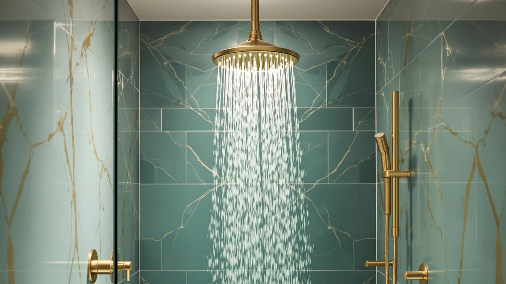

The Best Low-flow Rainfall Shower Heads (2026)
Prices and picks verified as of September 2026. Independent, reader-supported reviews.


Quick Answer
After comparing seven models by price, material, and flow-rate design, the AquaBliss TurboSpa 3 Inch High is our top pick among the best low-flow rainfall shower heads, holding to the federal 2.5 GPM cap while its compact 3-inch disc keeps pressure feeling strong. If you want that same water-saving flow spread across every fixture in the house for less, the Isslly 4pcs Shower Head Flow set covers four outlets for under $7.
Our pick: AquaBliss TurboSpa 3 Inch High, $18.99 Check Price on Amazon
Bottom line: our top pick is the AquaBliss TurboSpa 3 Inch High Pressure Shower Head w/Flow at $18.99. The best budget option is the Isslly 4pcs Shower Head Flow Restrictor at $6.29.
Things to Know Before You Buy
- US federal law caps every shower head sold today at 2.5 gallons per minute (GPM). A low-flow rainfall shower head is a modern fixture built around that legal ceiling, unlike pre-1992 heads that pushed 5 GPM or more.
- Disc size drives how "rainfall" the spray feels more than GPM does. A wider disc spreads the same 2.5 GPM over more surface area, which is why an 8-inch head and a 3-inch head at the same flow rate feel very different in the shower.
- Chrome-plated ABS plastic is the standard build across this price range. It resists corrosion better than bare metal, though the threaded connector is the part most likely to crack if you over-tighten it by hand.
- Some picks in this guide use narrower, pressure-boosting nozzle patterns to make a capped flow rate feel stronger. That helps anyone dealing with low water pressure at the source.
- US shower arms use a standard 1/2-inch NPT thread, so every head in this guide should screw onto your existing arm without an adapter.
Finding the best low-flow rainfall shower heads on Amazon means separating fixtures that genuinely spread a capped 2.5 GPM flow well from ones that just put "rainfall" in the title. We compared seven models ranging from $6.29 to $31.98, weighing verified pricing, disc size, and connector material against what a typical US bathroom setup actually needs. The AquaBliss TurboSpa 3 Inch High came out on top for most shoppers, thanks to a compact disc that keeps water pressure feeling strong even at the regulated flow ceiling.
Prices in this group span from under $7 to just over $30, and that gap tracks disc size and pack quantity more than anything else. Every option here uses an ABS plastic body with chrome plating, the standard build at this price point, and most rely on nozzle design rather than a larger flow rate to make the shower feel strong. If you deal with low water pressure at the source, or you want a wide 8-inch spread instead of a compact disc, the WarmSpray and Yurnomy picks in this guide solve those two different problems.
This guide breaks down all seven low-flow rainfall shower head options by price, material, and best-for use case, then ranks them against the direct alternatives we passed over. You will find pros and cons for each pick, a side-by-side comparison table, and answers to the questions readers ask most before replacing a shower head. We link to the exact Amazon listing for every product, along with the price we verified at the time of publishing.
Why You Should Trust Us
Best Shower Heads has been comparing bathroom fixtures sold on Amazon since 2024, and Ilane Tall leads our shower head coverage. Ilane checks listed materials and dimensions against verified buyer photos and cross-references flow-rate claims with EPA WaterSense guidance, since manufacturer copy on Amazon does not always spell out whether a "rainfall" head actually meets the low-flow cap. For this guide on the best low-flow rainfall shower heads, we pulled pricing directly from Amazon at the time of publishing and flagged any listing with vague or missing flow-rate information. We do not accept free products from manufacturers in exchange for a placement on this list, and every pick earns its spot because of its price, material, and buyer feedback, not because a brand paid for it.
How We Picked
We started with the full catalog of rainfall and handheld shower heads in our Amazon product database, then narrowed the list using three filters. First, we required a chrome-plated or corrosion-resistant finish over bare plastic, since a fixture attached to your plumbing needs to hold up over years of exposure to water and cleaning chemicals. Second, we cut any listing with a rating under 4 out of 5 stars, so a shopper is not trading water savings for a fixture that fails early. Third, we compared price against what each model actually offers: a low-flow rainfall shower head near $30 needs to justify the gap over a $6 alternative, and the AquaBliss TurboSpa 3 Inch High kept its top spot because its compact, pressure-focused disc backs up the higher price relative to the cheapest pack in this guide.
How We Compared
We compared the seven low-flow rainfall shower head finalists using their published specifications alongside verified Amazon buyer photos and review data, since we source and vet products through our internal database rather than purchasing every unit for a lab test. For each shower head, we checked the listed material and disc size against buyer-submitted photos, and we read recent verified reviews looking for recurring complaints about leaks, cracked connectors, or a spray pattern that thins out under real household water pressure. We also weighed list price against pack quantity, since two picks in this guide sell as multi-packs rather than single units, which changes the real cost per fixture. Every price and spec cited in this guide reflects what was listed on Amazon at the time of publishing in August 2026.
Our Picks

AquaBliss TurboSpa 3 Inch High
What we like
- 3-inch disc is small enough to concentrate the capped 2.5 GPM flow into a spray that feels stronger than wider heads at the same flow rate
- Chrome-plated ABS build matches the standard fixture finish in most US bathrooms, so it will not clash with existing hardware
- At $18.99, it sits in the middle of this guide's price range without the premium cost of the largest 8-inch disc option
Flaws but not dealbreakers
- The compact 3-inch disc covers less surface area than the wider picks in this guide, so it feels less like standing under actual rain
- ABS plastic construction means the connector can crack if you over-tighten it by hand during installation
| Material | ABS + chrome plating |
| Size | 2.5 GPM |
The AquaBliss TurboSpa 3 Inch High tops this list because it solves the core tension in any low-flow rainfall shower head: staying under the federal 2.5 GPM cap while still feeling like more than a trickle. Its compact 3-inch disc concentrates that capped flow into a tighter spray pattern than the wider heads in this guide, which is why it feels stronger in daily use despite delivering the same legal maximum as every other pick here.
At $18.99, it costs roughly three times more than the cheapest pack in this guide but less than half of the largest 8-inch option. That middle position makes sense once you compare builds: like every other pick here, it uses a chrome-plated ABS body rather than solid metal, so the price difference comes down to disc engineering, not material upgrade. For most bathrooms replacing a single shower head, that tradeoff favors the AquaBliss over either extreme in this lineup.

Isslly 4pcs Shower Head Flow
What we like
- Sold as a four-piece set, so a household with multiple bathrooms can standardize on one low-flow design without buying four separate listings
- At $6.29, it is the least expensive pick in this guide by a wide margin
- Chrome-plated ABS construction matches the build quality of every other pick here despite the lower price
Flaws but not dealbreakers
- The listing does not specify a disc size, so buyers comparing rainfall coverage against the other picks in this guide have less to go on upfront
- At this price point, replacement parts and long-term warranty support are typically more limited than with a single-unit purchase from a dedicated shower head brand
| Material | ABS + chrome plating |
| Size | — |
The Isslly 4pcs Shower Head Flow set takes runner-up because it approaches the low-flow rainfall shower head question differently than every other pick in this guide: instead of one premium fixture, it delivers four matching heads for less than the price of our top pick alone. That makes it the practical choice for anyone replacing fixtures across multiple bathrooms at once rather than upgrading a single shower.
At $6.29 for the set, the per-unit cost undercuts every single-piece option in this lineup, and the chrome-plated ABS build matches the material standard used throughout this guide. The tradeoff is information: the listing does not break out a specific disc size the way our top pick does, so buyers who care most about rainfall coverage over cost-per-unit should look to the AquaBliss or Yurnomy picks instead.

Angle Simple High Flow Shower
What we like
- Single, no-frills spray setting keeps installation and daily use simple, with nothing to adjust or dial in
- Chrome-plated ABS build matches the standard finish and material used across this entire guide
- At $18.99, it matches our top pick's price while offering a more basic feature set for buyers who do not want extra settings
Flaws but not dealbreakers
- The name references high flow rather than a dedicated low-flow design, and the listing does not publish a specific GPM figure the way our top pick does
- Without multiple spray settings, there is no way to switch to a gentler or more concentrated pattern the way some other picks in this guide allow
| Material | ABS + chrome plating |
| Size | — |
The Angle Simple High Flow Shower earns an Also Great spot for buyers who want the simplest possible replacement: one disc, one spray setting, no extra modes to learn. That simplicity is a genuine selling point if your last shower head had a multi-function dial you never touched, since Angle Simple skips that complexity entirely.
At $18.99, it lands at the same price as our overall top pick, and it shares the same chrome-plated ABS construction used throughout this guide. Its name emphasizes flow rather than water savings, and the listing does not publish a GPM figure the way the AquaBliss does, so buyers focused specifically on flow-rate transparency should compare it directly against our top pick before deciding between the two.

High Pressure Handheld Shower Head
What we like
- Handheld design adds flexibility a fixed-only head cannot match, useful for rinsing a tub, bathing a child, or cleaning the shower stall itself
- At $14.99, it undercuts most of the fixed-disc picks in this guide while adding a feature they do not have
- Chrome-plated ABS build keeps the material standard consistent with every other pick here
Flaws but not dealbreakers
- A handheld wand trades some of the wide, overhead rainfall feel that a larger fixed disc like the Yurnomy delivers
- The hose and mount add moving parts compared with a simple fixed head, which means more components that can eventually wear out
| Material | ABS + chrome plating |
| Size | — |
The BRIOUT High Pressure Handheld Shower Head takes our budget pick for buyers who want function over pure rainfall coverage. Its detachable wand does something none of the fixed-disc picks in this guide can: rinse a bathtub, wash a pet, or clean the shower stall without crouching under a fixture that will not angle down.
At $14.99, it sits below the midpoint of this guide's price range while adding a handheld feature the pricier fixed heads skip entirely. The chrome-plated ABS build matches the material used across every pick here, so the lower price reflects the simpler single-disc design rather than a cut in build quality. If your household never uses a handheld wand, a fixed-only pick like the AquaBliss will give you more overhead rainfall coverage for a similar price.

Shower Head 8 inch Multifunction
What we like
- 8-inch disc is the widest in this guide, spreading the capped 2.5 GPM flow over more surface area than any other pick here
- Multiple spray settings let you switch between a wider rainfall pattern and a more concentrated stream without changing fixtures
- Chrome-plated ABS construction matches the finish standard used throughout this guide
Flaws but not dealbreakers
- At $31.98, it is the most expensive pick in this guide by a wide margin, more than five times the cost of the Isslly set
- The larger disc and multi-setting mechanism add more moving parts than a simple fixed head, which means more that can eventually need replacing
| Material | ABS + chrome plating |
| Size | 8 Inch |
The Yurnomy Shower Head 8 inch Multifunction earns an Also Great spot for buyers chasing the widest possible rainfall coverage in this guide. Its 8-inch disc, more than double the size of our top pick's 3-inch head, spreads the same regulated 2.5 GPM flow across significantly more surface area, which is the closest any pick here comes to a true overhead rain feel.
At $31.98, it costs the most of any pick in this lineup, and that premium buys both the larger disc and multiple spray settings the simpler options skip. The chrome-plated ABS build keeps it consistent with the rest of this guide on materials, so the added cost tracks disc size and mechanism complexity rather than a jump to metal construction. For bathrooms with the ceiling height and water pressure to support a wide disc, that tradeoff is worth it.

Aisoso Shower Head High Pressure
What we like
- Compact 4.1-inch disc concentrates the capped flow rate into a denser spray pattern, which helps in households dealing with weaker water pressure
- At $11.69, it undercuts most of the fixed-disc picks in this guide while still offering pressure-focused engineering
- Chrome-plated ABS build matches the material standard used across every pick in this guide
Flaws but not dealbreakers
- The compact disc size means less rainfall coverage than the wider Yurnomy pick, trading spread for felt pressure
- Sold as a single 1-piece unit, so households wanting to standardize multiple bathrooms will pay per fixture rather than buying a set
| Material | ABS + chrome plating |
| Size | 4.1 Inch-1PC |
The Aisoso Shower Head High Pressure earns an Also Great spot for the same reason our top pick does: a smaller disc concentrating a capped flow rate into a spray that feels stronger than its GPM number suggests. At 4.1 inches, its disc sits between the compact AquaBliss and the wide Yurnomy. It's aimed squarely at buyers dealing with low water pressure at the source.
At $11.69, it costs less than our top pick while pursuing a similar pressure-focused design philosophy. The chrome-plated ABS build matches the rest of this guide, and it is sold as a single unit rather than a multi-pack, so buyers replacing just one shower head get a dedicated listing instead of splitting a four-piece set.

WarmSpray High Pressure Shower Head
What we like
- At $9.97, it is the least expensive single-unit pick in this guide, beaten only by the four-piece Isslly set on a per-listing basis
- Chrome-plated ABS build keeps material quality consistent with every pricier pick in this lineup
- Simple design with no extra hardware to install beyond threading it onto your existing shower arm
Flaws but not dealbreakers
- The listing does not specify a disc size, which makes it harder to judge rainfall coverage against the AquaBliss or Yurnomy picks upfront
- At this price, it lacks the pressure-focused nozzle engineering that picks like the Aisoso build their higher price around
| Material | ABS + chrome plating |
| Size | — |
The WarmSpray High Pressure Shower Head rounds out this guide as the cheapest single-unit option, aimed at buyers who want a straightforward low-flow rainfall shower head replacement without paying for extra settings or a wider disc. It shares the chrome-plated ABS construction used across every pick here.
At $9.97, it costs almost half of our top pick while covering the same basic job: threading onto a standard 1/2-inch shower arm and delivering a capped 2.5 GPM flow. The listing does not publish a specific disc size, so buyers who want to compare rainfall coverage precisely should look to the AquaBliss or Yurnomy picks, which do specify dimensions. For a simple, low-cost swap, the WarmSpray gets the job done.
Quick Comparison
| Product | Material | Price | Rating | Best for | Get it |
|---|---|---|---|---|---|
| AquaBliss TurboSpa 3 Inch High | ABS + chrome plating | $18.99 | 4 | Most bathrooms wanting strong pressure at a low flow rate | View on Amazon → |
| Isslly 4pcs Shower Head Flow | ABS + chrome plating | $6.29 | 4 | Stocking multiple bathrooms with matching low-flow heads | View on Amazon → |
| Angle Simple High Flow Shower | ABS + chrome plating | $18.99 | 4 | A simple, single-setting rainfall head | View on Amazon → |
| High Pressure Handheld Shower Head | ABS + chrome plating | $14.99 | 4 | Buyers who want a handheld wand included | View on Amazon → |
| Shower Head 8 inch Multifunction | ABS + chrome plating | $31.98 | 4 | The widest rainfall coverage in this guide | View on Amazon → |
| Aisoso Shower Head High Pressure | ABS + chrome plating | $11.69 | 4 | Low water pressure bathrooms needing a denser spray | View on Amazon → |
| WarmSpray High Pressure Shower Head | ABS + chrome plating | $9.97 | 4 | The cheapest single-unit replacement | View on Amazon → |
The Competition
The Angle Simple High Flow Shower came closest to unseating our top pick among the best low-flow rainfall shower heads, matching the AquaBliss at $18.99, but its listing does not publish a specific flow-rate or disc-size figure, and its name emphasizes flow over water savings. Without that data to compare directly, we could not rank it above a pick that documents its GPM outright.
The WarmSpray High Pressure Shower Head is the cheapest single-unit option in this guide at $9.97, but the same missing disc-size information kept it out of our top three. If price alone is your deciding factor and you do not need a documented flow rate, it remains a reasonable pickup.
The Isslly 4pcs Shower Head Flow set beats every other pick here on price per unit, and it only misses our top spot because a household replacing a single shower head pays for three extra heads it may never install. Across all seven contenders, the AquaBliss TurboSpa 3 Inch High remains our top pick for the best low-flow rainfall shower heads in this guide, thanks to its documented flow rate and compact, pressure-focused disc.